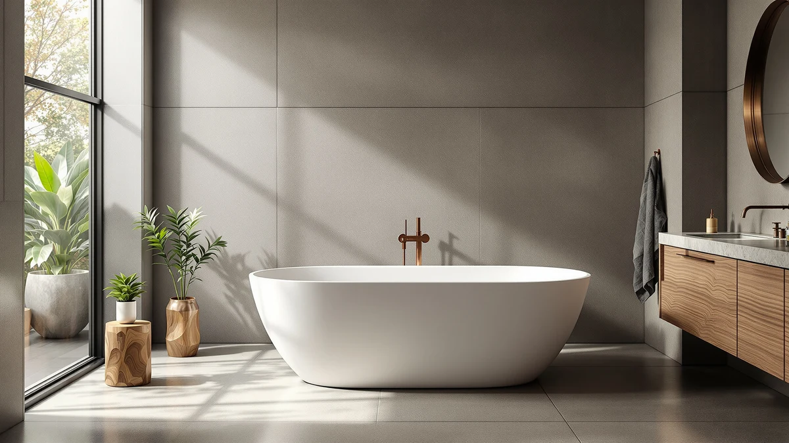

Quick Answer
This WOODBRIDGE 59" stone resin review found the tub's main selling point is its stone resin shell, a heavier and pricier material than the acrylic used in the three alternatives compared here. At $1,299.00, it costs $499 to $530 more than the homfan 67 Inch, WOODBRIDGE 71", and WOODBRIDGE 67" tubs in this review, all of which are also longer. If a stone resin finish matters more to you than saving money or getting extra length, the WOODBRIDGE 59" earns its price.
Our pick: WOODBRIDGE 59" Stone Resin Freestanding, $1,299.00 Check Price on Amazon
Things to Know Before You Buy
- This WOODBRIDGE 59" stone resin review focuses on the tub's stone resin shell, the material WOODBRIDGE uses to set it apart from the acrylic tubs compared below.
- At $1,299.00, it costs $499.01 to $530.00 more than the three acrylic alternatives in this review, all of which also measure longer than 59 inches.
- WOODBRIDGE does not publish water capacity or interior depth for this model in its listing, so buyers comparing spec sheets will find gaps here.
- Like every tub in this review, it ships without a drain, overflow, or faucet, so budget for that hardware separately.
- Stone resin is heavier than acrylic, so confirm your bathroom floor and access path can handle the extra weight during delivery and installation.
This WOODBRIDGE 59" stone resin review looks at whether the tub's stone resin shell and $1,299.00 price earn it a spot in a bathroom over three acrylic alternatives we compare it against. At 59 inches long, the WOODBRIDGE is built from stone resin rather than the acrylic used across the rest of this lineup, a material choice that changes both its weight and its price.
We priced the WOODBRIDGE against the homfan 67 Inch, WOODBRIDGE 71", and WOODBRIDGE 67" covered in this review, and at $1,299.00 it's the most expensive of the four by a wide margin. The question this review answers is whether a stone resin shell is worth that premium, or whether a cheaper acrylic alternative serves most bathrooms equally well.
Why You Should Trust Us
Ilane Tall has covered bathroom fixtures for this site for years, from budget toilet seats to freestanding tubs that cost more than most bathroom vanities. For this WOODBRIDGE 59" stone resin review, we checked WOODBRIDGE's published listing details, compared current Amazon pricing across four freestanding tubs, and weighed the stone resin shell against the acrylic builds used elsewhere in this review.
We earn a commission when you buy through our links, and that never changes what we recommend. When a tub has a real limitation, like WOODBRIDGE's missing capacity and depth specs next to more detailed competitor listings, we say so directly instead of glossing over it.
How We Compared
For this WOODBRIDGE 59" stone resin review we focused on the two things that decide whether a stone resin tub earns its price: what the material actually offers over acrylic, and what it costs relative to similarly sized rivals. The WOODBRIDGE's defining feature is its stone resin shell, built into a 59-inch tub, and that material is the main difference between this tub and the acrylic profiles on the homfan 67 Inch and both WOODBRIDGE acrylic models we compare it against.
Specification depth was the other variable we weighed closely. WOODBRIDGE's listing does not publish water capacity, interior depth, or a weight rating for this model, gaps that stood out once we lined it up against the other three tubs in this lineup. A buyer who wants to compare tubs strictly on paper will find less to go on here than with some competitors.
We priced out the full setup the way any buyer would have to. The WOODBRIDGE does not ship with a drain or overflow hardware preinstalled, so budget for that hardware plus a faucet, supply lines, and installation labor on top of the $1,299.00 sticker price, the same as with every tub in this review.
Weight mattered as much in our assessment. Stone resin is a heavier, denser material than the acrylic used across the rest of this lineup, so confirm your bathroom floor and delivery access can handle that extra weight before you order.
Overview & Specs

WOODBRIDGE 59" Stone Resin Freestanding
What we like
- Stone resin shell offers a denser, heavier build than the acrylic tubs compared in this review
- 59-inch footprint fits the same general floor space as many standard freestanding tubs
- Stone resin surfaces typically resist scratching and staining better than acrylic over years of use
Flaws but not dealbreakers
- At $1,299.00, it costs $499 to $530 more than the three acrylic alternatives in this review
- WOODBRIDGE does not publish water capacity, interior depth, or weight for this model
- No drain, overflow, or faucet included, so factor that hardware into your total budget
| Material | — |
| Size | 59 Inch |
This WOODBRIDGE 59" stone resin review found the tub builds its case on material rather than raw specs. Its stone resin shell is meant to offer a denser, more substantial feel than the acrylic tubs it competes against here, and the 59-inch shell doesn't come with published water capacity, interior depth, or exact weight. That missing detail makes this tub harder to compare on paper against the WOODBRIDGE 71" and WOODBRIDGE 67" acrylic models further down this review.
At $1,299.00, the WOODBRIDGE costs more than every other tub we compare it against here, including the homfan 67 Inch at $799.99, the WOODBRIDGE 71" at $784.73, and the WOODBRIDGE 67" at $769.00, the last two of which are also longer despite sharing the WOODBRIDGE name. That premium buys you the stone resin material and nothing else that WOODBRIDGE discloses, so the tub makes the most sense for a buyer who specifically wants that material and is willing to pay for it without a full spec sheet to back up the price.
What We Liked
This WOODBRIDGE 59" stone resin review found the material itself to be the standout feature. Stone resin is a denser, heavier composite than the acrylic used in the three alternatives compared here, and that density typically translates into a tub that feels less hollow underfoot and resists scratching better over years of use.
The 59-inch footprint also worked in its favor. That length fits the same general floor space as many standard freestanding tubs, so a bathroom already plumbed for a 59-inch tub shouldn't need layout changes to accommodate the WOODBRIDGE.
Brand consistency stood out too. WOODBRIDGE also makes the 71-inch and 67-inch acrylic tubs in this review, so buyers who want to stay within one manufacturer's lineup while stepping up to a stone resin finish have that option here.
What Could Be Better
This WOODBRIDGE 59" stone resin review found missing specifications to be the tub's clearest limitation. WOODBRIDGE does not publish water capacity, interior depth, or a weight rating for this model, so you're buying this tub with less information than some acrylic listings give you for a similar price.
Price is the other tradeoff. At $1,299.00, the WOODBRIDGE costs $499.01 more than the homfan 67 Inch, $514.27 more than the WOODBRIDGE 71", and $530.00 more than the WOODBRIDGE 67", the last two of which are also longer. You're paying for the stone resin material, not for the lowest price or the most published detail in this review.
Hardware isn't included either. Like every tub compared here, the WOODBRIDGE ships without a drain, overflow, or faucet, so factor that cost and the matching installation labor into your total budget before you commit to the $1,299.00 sticker price.
Who Is It For?
This WOODBRIDGE 59" stone resin review recommends buying it if a dense, substantial stone resin shell matters more to you than a detailed spec sheet or the lowest price in this review. It suits a buyer who wants that heavier material feel and is comfortable paying a premium for it.
It also makes sense for someone already drawn to the WOODBRIDGE brand, since the same manufacturer makes the 71-inch and 67-inch acrylic tubs in this review. Skip it if you want full published specs before you buy, since WOODBRIDGE discloses less capacity and weight detail for this model than some acrylic alternatives.
Buyers who want more length for a lower price should look at the WOODBRIDGE 67" or WOODBRIDGE 71" instead. Both cost over $500 less than the stone resin model while offering more length, a better tradeoff for anyone who prioritizes room to stretch out over the stone resin material.
Alternatives to Consider
If the WOODBRIDGE's $1,299.00 price or its missing spec sheet rules it out, the other three tubs in this WOODBRIDGE 59" stone resin review give you a different tradeoff. Each one swaps the stone resin shell for a lower price, an acrylic build, or extra length.

Editor’s Pick
homfan 67 Inch Freestanding Acrylic
The homfan 67 Inch is the longest and cheapest tub in this comparison, priced $499.01 below the WOODBRIDGE stone resin model. It skips the stone resin shell for a standard acrylic build, which makes it a better fit for a buyer who wants more length and a lower price over a heavier material. homfan's listing, like WOODBRIDGE's, doesn't publish detailed capacity or weight specs, so you're not gaining spec-sheet transparency by choosing this tub, only saving money and gaining eight extra inches. If length and price matter more than a stone resin finish, the homfan 67 Inch is the pick.
$799.99
Check Price on Amazon
Best Value
WOODBRIDGE 71" Acrylic Freestanding Bathtub
The WOODBRIDGE 71" comes from the same brand as the stone resin model in this review but swaps the material for acrylic, cutting the price by $514.27 while adding twelve inches of length. It doesn't offer the density or scratch resistance of stone resin, so buyers who specifically want that material won't get it here, but for a longer acrylic tub from a familiar name at a lower price, the WOODBRIDGE 71" is a reasonable swap. Neither listing publishes detailed capacity or weight specs, so that part of the comparison is a wash between the two.
$784.73
Check Price on Amazon
Premium Choice
WOODBRIDGE 67" Acrylic Freestanding Bathtub
The WOODBRIDGE 67" is the cheapest tub in this review at $769.00, a full $530.00 below the stone resin model, while still offering eight more inches of length. Like the WOODBRIDGE 71", it trades the stone resin shell for a standard acrylic build, so it won't deliver the same density or scratch resistance, but it suits a buyer who wants the WOODBRIDGE name at the lowest price in this lineup. If budget matters more than the stone resin material, the WOODBRIDGE 67" is the strongest value pick here.
$769.00
Check Price on AmazonFrequently Asked Questions
What is the WOODBRIDGE 59" stone resin tub made of?
WOODBRIDGE builds this 59-inch freestanding tub from stone resin, a denser composite material than the acrylic used in the other three tubs compared in this review. WOODBRIDGE does not publish an exact material breakdown or weight for this model, so if that detail matters for your installation, confirm with the seller before you order.
Does the WOODBRIDGE 59" stone resin tub include a drain or faucet?
WOODBRIDGE's listing doesn't call out included drain or overflow hardware, so budget for that separately along with a floor-mount or freestanding faucet, the same requirement that applies to the homfan and other WOODBRIDGE tubs in this review.
Is the WOODBRIDGE 59" stone resin tub worth it over the acrylic alternatives?
It depends on what you want from the material. This WOODBRIDGE 59" stone resin review found the stone resin model's main advantage is its denser, heavier build, while the homfan 67 Inch, WOODBRIDGE 71", and WOODBRIDGE 67" all cost less and offer more length. If the stone resin material matters more than saving $499 to $530, the stone resin model is the stronger buy.
Final Verdict
This WOODBRIDGE 59" stone resin review comes down to material versus price. The WOODBRIDGE wins on build with a denser stone resin shell that none of the three acrylic alternatives offer, even though it's the most expensive tub here and WOODBRIDGE publishes less capacity and weight detail than some rivals. If a stone resin finish matters more to you than a full spec sheet or the lowest price, the WOODBRIDGE 59" stone resin tub is the one to buy. Choose the homfan 67 Inch if you want the lowest price and the most length, the WOODBRIDGE 67" if you want the WOODBRIDGE name at a lower cost, or the WOODBRIDGE 71" if extra length matters more than the stone resin material.
Related Guides
If this WOODBRIDGE 59" stone resin review didn't settle your search, these guides cover more freestanding tub options and buying advice.